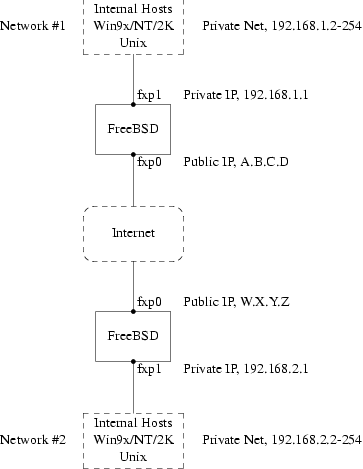
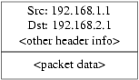
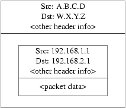
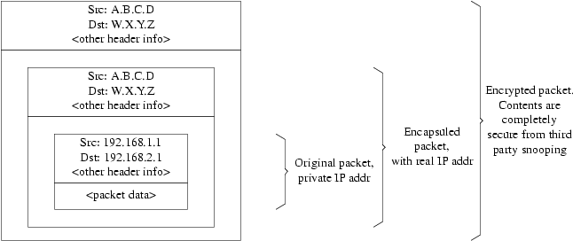

Creating a VPN between two networks, separated by the Internet, using FreeBSD gateways.
This section will guide you through the process of setting up IPsec, and to use it in an environment which consists of FreeBSD and Microsoft® Windows® 2000/XP machines, to make them communicate securely. In order to set up IPsec, it is necessary that you are familiar with the concepts of building a custom kernel (see µÚ 8 章).
IPsec is a protocol which sits on top of the Internet Protocol (IP) layer. It allows two or more hosts to communicate in a secure manner (hence the name). The FreeBSD IPsec ``network stack'' is based on the KAME implementation, which has support for both protocol families, IPv4 and IPv6.
注: FreeBSD 5.X contains a ``hardware accelerated'' IPsec stack, known as ``Fast IPsec'', that was obtained from OpenBSD. It employs cryptographic hardware (whenever possible) via the crypto(4) subsystem to optimize the performance of IPsec. This subsystem is new, and does not support all the features that are available in the KAME version of IPsec. However, in order to enable hardware-accelerated IPsec, the following kernel option has to be added to your kernel configuration file:
options FAST_IPSEC # new IPsec (cannot define w/ IPSEC)Note, that it is not currently possible to use the ``Fast IPsec'' subsystem in lue with the KAME implementation of IPsec. Consult the fast_ipsec(4) manual page for more information.
IPsec consists of two sub-protocols:
Encapsulated Security Payload (ESP), protects the IP packet data from third party interference, by encrypting the contents using symmetric cryptography algorithms (like Blowfish, 3DES).
Authentication Header (AH), protects the IP packet header from third party interference and spoofing, by computing a cryptographic checksum and hashing the IP packet header fields with a secure hashing function. This is then followed by an additional header that contains the hash, to allow the information in the packet to be authenticated.
ESP and AH can either be used together or separately, depending on the environment.
IPsec can either be used to directly encrypt the traffic between two hosts (known as Transport Mode); or to build ``virtual tunnels'' between two subnets, which could be used for secure communication between two corporate networks (known as Tunnel Mode). The latter is more commonly known as a Virtual Private Network (VPN). The ipsec(4) manual page should be consulted for detailed information on the IPsec subsystem in FreeBSD.
To add IPsec support to your kernel, add the following options to your kernel configuration file:
options IPSEC #IP security
options IPSEC_ESP #IP security (crypto; define w/ IPSEC)
If IPsec debugging support is desired, the following kernel option should also be added:
options IPSEC_DEBUG #debug for IP security
There's no standard for what constitutes a VPN. VPNs can be implemented using a number of different technologies, each of which have their own strengths and weaknesses. This article presents a number of scenarios, and strategies for implementing a VPN for each scenario.
This is the scenario that caused me to first investigating VPNs. The premise is as follows:
You have at least two sites
Both sites are using IP internally
Both sites are connected to the Internet, through a gateway that is running FreeBSD.
The gateway on each network has at least one public IP address.
The internal addresses of the two networks can be public or private IP addresses, it doesn't matter. You can be running NAT on the gateway machine if necessary.
The internal IP addresses of the two networks do not collide. While I expect it is theoretically possible to use a combination of VPN technology and NAT to get this to work, I expect it to be a configuration nightmare.
If you find that you are trying to connect two networks, both of which, internally, use the same private IP address range (e.g., both of them use 192.168.1.x), then one of the networks will have to be renumbered.
The network topology might look something like this:

Notice the two public IP addresses. I'll use the letters to refer to them in the rest of this article. Anywhere you see those letters in this article, replace them with your own public IP addresses. Note also that internally, the two gateway machines have .1 IP addresses, and that the two networks have different private IP addresses (192.168.1.x and 192.168.2.x respectively). All the machines on the private networks have been configured to use the .1 machine as their default gateway.
The intention is that, from a network point of view, each network should view the machines on the other network as though they were directly attached the same router -- albeit a slightly slow router with an occasional tendency to drop packets.
This means that (for example), machine 192.168.1.20 should be able to run
ping 192.168.2.34
and have it work, transparently. Windows machines should be able to see the machines on the other network, browse file shares, and so on, in exactly the same way that they can browse machines on the local network.
And the whole thing has to be secure. This means that traffic between the two networks has to be encrypted.
Creating a VPN between these two networks is a multi-step process. The stages are as follows:
Create a ``virtual'' network link between the two networks, across the Internet. Test it, using tools like ping(8), to make sure it works.
Apply security policies to ensure that traffic between the two networks is transparently encrypted and decrypted as necessary. Test this, using tools like tcpdump(1), to ensure that traffic is encrypted.
Configure additional software on the FreeBSD gateways, to allow Windows machines to see one another across the VPN.
Suppose that you were logged in to the gateway machine on network #1 (with public IP address A.B.C.D, private IP address 192.168.1.1), and you ran ping 192.168.2.1, which is the private address of the machine with IP address W.X.Y.Z. What needs to happen in order for this to work?
The gateway machine needs to know how to reach 192.168.2.1. In other words, it needs to have a route to 192.168.2.1.
Private IP addresses, such as those in the 192.168.x range are not supposed to appear on the Internet at large. Instead, each packet you send to 192.168.2.1 will need to be wrapped up inside another packet. This packet will need to appear to be from A.B.C.D, and it will have to be sent to W.X.Y.Z. This process is called encapsulation.
Once this packet arrives at W.X.Y.Z it will need to ``unencapsulated'', and delivered to 192.168.2.1.
You can think of this as requiring a ``tunnel'' between the two networks. The two ``tunnel mouths'' are the IP addresses A.B.C.D and W.X.Y.Z, and the tunnel must be told the addresses of the private IP addresses that will be allowed to pass through it. The tunnel is used to transfer traffic with private IP addresses across the public Internet.
This tunnel is created by using the generic interface, or gif devices on FreeBSD. As you can imagine, the gif interface on each gateway host must be configured with four IP addresses; two for the public IP addresses, and two for the private IP addresses.
Support for the gif device must be compiled in to the FreeBSD kernel on both machines. You can do this by adding the line:
pseudo-device gif
to the kernel configuration files on both machines, and then compile, install, and reboot as normal.
Configuring the tunnel is a two step process. First the tunnel must be told what the outside (or public) IP addresses are, using gifconfig(8). Then the private IP addresses must be configured using ifconfig(8).
注: In FreeBSD 5.X, the functionality provided by the gifconfig(8) utility has been merged into ifconfig(8).
On the gateway machine on network #1 you would run the following two commands to configure the tunnel.
gifconfig gif0 A.B.C.D W.X.Y.Z
ifconfig gif0 inet 192.168.1.1 192.168.2.1 netmask 0xffffffff
On the other gateway machine you run the same commands, but with the order of the IP addresses reversed.
gifconfig gif0 W.X.Y.Z A.B.C.D
ifconfig gif0 inet 192.168.2.1 192.168.1.1 netmask 0xffffffff
You can then run:
gifconfig gif0
to see the configuration. For example, on the network #1 gateway, you would see this:
# gifconfig gif0
gif0: flags=8011<UP,POINTTOPOINT,MULTICAST> mtu 1280
inet 192.168.1.1 --> 192.168.2.1 netmask 0xffffffff
physical address inet A.B.C.D --> W.X.Y.Z
As you can see, a tunnel has been created between the physical addresses A.B.C.D and W.X.Y.Z, and the traffic allowed through the tunnel is that between 192.168.1.1 and 192.168.2.1.
This will also have added an entry to the routing table on both machines, which you can examine with the command netstat -rn. This output is from the gateway host on network #1.
# netstat -rn
Routing tables
Internet:
Destination Gateway Flags Refs Use Netif Expire
...
192.168.2.1 192.168.1.1 UH 0 0 gif0
...
As the ``Flags'' value indicates, this is a host route, which means that each gateway knows how to reach the other gateway, but they do not know how to reach the rest of their respective networks. That problem will be fixed shortly.
It is likely that you are running a firewall on both machines. This will need to be circumvented for your VPN traffic. You might want to allow all traffic between both networks, or you might want to include firewall rules that protect both ends of the VPN from one another.
It greatly simplifies testing if you configure the firewall to allow all traffic through the VPN. You can always tighten things up later. If you are using ipfw(8) on the gateway machines then a command like
ipfw add 1 allow ip from any to any via gif0
will allow all traffic between the two end points of the VPN, without affecting your other firewall rules. Obviously you will need to run this command on both gateway hosts.
This is sufficient to allow each gateway machine to ping the other. On 192.168.1.1, you should be able to run
ping 192.168.2.1
and get a response, and you should be able to do the same thing on the other gateway machine.
However, you will not be able to reach internal machines on either network yet. This is because of the routing -- although the gateway machines know how to reach one another, they do not know how to reach the network behind each one.
To solve this problem you must add a static route on each gateway machine. The command to do this on the first gateway would be:
route add 192.168.2.0 192.168.2.1 netmask 0xffffff00
This says ``In order to reach the hosts on the network 192.168.2.0, send the packets to the host 192.168.2.1''. You will need to run a similar command on the other gateway, but with the 192.168.1.x addresses instead.
IP traffic from hosts on one network will now be able to reach hosts on the other network.
That has now created two thirds of a VPN between the two networks, in as much as it is ``virtual'' and it is a ``network''. It is not private yet. You can test this using ping(8) and tcpdump(1). Log in to the gateway host and run
tcpdump dst host 192.168.2.1
In another log in session on the same host run
ping 192.168.2.1
You will see output that looks something like this:
16:10:24.018080 192.168.1.1 > 192.168.2.1: icmp: echo request
16:10:24.018109 192.168.1.1 > 192.168.2.1: icmp: echo reply
16:10:25.018814 192.168.1.1 > 192.168.2.1: icmp: echo request
16:10:25.018847 192.168.1.1 > 192.168.2.1: icmp: echo reply
16:10:26.028896 192.168.1.1 > 192.168.2.1: icmp: echo request
16:10:26.029112 192.168.1.1 > 192.168.2.1: icmp: echo reply
As you can see, the ICMP messages are going back and forth unencrypted. If you had used the -s parameter to tcpdump(1) to grab more bytes of data from the packets you would see more information.
Obviously this is unacceptable. The next section will discuss securing the link between the two networks so that it all traffic is automatically encrypted.
Summary:
Configure both kernels with ``pseudo-device gif''.
Edit /etc/rc.conf on gateway host #1 and add the following lines (replacing IP addresses as necessary).
gifconfig_gif0="A.B.C.D W.X.Y.Z"
ifconfig_gif0="inet 192.168.1.1 192.168.2.1 netmask 0xffffffff"
static_routes="vpn"
route_vpn="192.168.2.0 192.168.2.1 netmask 0xffffff00"
Edit your firewall script (/etc/rc.firewall, or similar) on both hosts, and add
ipfw add 1 allow ip from any to any via gif0
Make similar changes to /etc/rc.conf on gateway host #2, reversing the order of IP addresses.
To secure the link we will be using IPsec. IPsec provides a mechanism for two hosts to agree on an encryption key, and to then use this key in order to encrypt data between the two hosts.
The are two areas of configuration to be considered here.
There must be a mechanism for two hosts to agree on the encryption mechanism to use. Once two hosts have agreed on this mechanism there is said to be a ``security association'' between them.
There must be a mechanism for specifying which traffic should be encrypted. Obviously, you don't want to encrypt all your outgoing traffic -- you only want to encrypt the traffic that is part of the VPN. The rules that you put in place to determine what traffic will be encrypted are called ``security policies''.
Security associations and security policies are both maintained by the kernel, and can be modified by userland programs. However, before you can do this you must configure the kernel to support IPsec and the Encapsulated Security Payload (ESP) protocol. This is done by configuring a kernel with:
options IPSEC
options IPSEC_ESP
and recompiling, reinstalling, and rebooting. As before you will need to do this to the kernels on both of the gateway hosts.
You have two choices when it comes to setting up security associations. You can configure them by hand between two hosts, which entails choosing the encryption algorithm, encryption keys, and so forth, or you can use daemons that implement the Internet Key Exchange protocol (IKE) to do this for you.
I recommend the latter. Apart from anything else, it is easier to set up.
Editing and displaying security policies is carried out using setkey(8). By analogy, setkey is to the kernel's security policy tables as route(8) is to the kernel's routing tables. setkey can also display the current security associations, and to continue the analogy further, is akin to netstat -r in that respect.
There are a number of choices for daemons to manage security associations with FreeBSD. This article will describe how to use one of these, racoon. racoon is in the FreeBSD ports collection, in the security/ category, and is installed in the usual way.
racoon must be run on both gateway hosts. On each host it is configured with the IP address of the other end of the VPN, and a secret key (which you choose, and must be the same on both gateways).
The two daemons then contact one another, confirm that they are who they say they are (by using the secret key that you configured). The daemons then generate a new secret key, and use this to encrypt the traffic over the VPN. They periodically change this secret, so that even if an attacker were to crack one of the keys (which is as theoretically close to unfeasible as it gets) it won't do them much good -- by the time they've cracked the key the two daemons have chosen another one.
racoon's configuration is stored in ${PREFIX}/etc/racoon. You should find a configuration file there, which should not need to be changed too much. The other component of racoon's configuration, which you will need to change, is the ``pre-shared key''.
The default racoon configuration expects to find this in the file ${PREFIX}/etc/racoon/psk.txt. It is important to note that the pre-shared key is not the key that will be used to encrypt your traffic across the VPN link, it is simply a token that allows the key management daemons to trust one another.
psk.txt contains a line for each remote site you are dealing with. In this example, where there are two sites, each psk.txt file will contain one line (because each end of the VPN is only dealing with one other end).
On gateway host #1 this line should look like this:
W.X.Y.Z secret
That is, the public IP address of the remote end, whitespace, and a text string that provides the secret. Obviously, you shouldn't use ``secret'' as your key -- the normal rules for choosing a password apply.
On gateway host #2 the line would look like this
A.B.C.D secret
That is, the public IP address of the remote end, and the same secret key. psk.txt must be mode 0600 (i.e., only read/write to root) before racoon will run.
You must run racoon on both gateway machines. You will also need to add some firewall rules to allow the IKE traffic, which is carried over UDP to the ISAKMP (Internet Security Association Key Management Protocol) port. Again, this should be fairly early in your firewall ruleset.
ipfw add 1 allow udp from A.B.C.D to W.X.Y.Z isakmp
ipfw add 1 allow udp from W.X.Y.Z to A.B.C.D isakmp
Once racoon is running you can try pinging one gateway host from the other. The connection is still not encrypted, but racoon will then set up the security associations between the two hosts -- this might take a moment, and you may see this as a short delay before the ping commands start responding.
Once the security association has been set up you can view it using setkey(8). Run
setkey -D
on either host to view the security association information.
That's one half of the problem. They other half is setting your security policies.
To create a sensible security policy, let's review what's been set up so far. This discussions hold for both ends of the link.
Each IP packet that you send out has a header that contains data about the packet. The header includes the IP addresses of both the source and destination. As we already know, private IP addresses, such as the 192.168.x.y range are not supposed to appear on the public Internet. Instead, they must first be encapsulated inside another packet. This packet must have the public source and destination IP addresses substituted for the private addresses.
So if your outgoing packet started looking like this:

Then it will be encapsulated inside another packet, looking something like this:

This encapsulation is carried out by the gif device. As you can see, the packet now has real IP addresses on the outside, and our original packet has been wrapped up as data inside the packet that will be put out on the Internet.
Obviously, we want all traffic between the VPNs to be encrypted. You might try putting this in to words, as:
``If a packet leaves from A.B.C.D, and it is destined for W.X.Y.Z, then encrypt it, using the necessary security associations.''
``If a packet arrives from W.X.Y.Z, and it is destined for A.B.C.D, then decrypt it, using the necessary security associations.''
That's close, but not quite right. If you did this, all traffic to and from W.X.Y.Z, even traffic that was not part of the VPN, would be encrypted. That's not quite what you want. The correct policy is as follows
``If a packet leaves from A.B.C.D, and that packet is encapsulating another packet, and it is destined for W.X.Y.Z, then encrypt it, using the necessary security associations.''
``If a packet arrives from W.X.Y.Z, and that packet is encapsulating another packet, and it is destined for A.B.C.D, then encrypt it, using the necessary security associations.''
A subtle change, but a necessary one.
Security policies are also set using setkey(8). setkey(8) features a configuration language for defining the policy. You can either enter configuration instructions via stdin, or you can use the -f option to specify a filename that contains configuration instructions.
The configuration on gateway host #1 (which has the public IP address A.B.C.D) to force all outbound traffic to W.X.Y.Z to be encrypted is:
spdadd A.B.C.D/32 W.X.Y.Z/32 ipencap -P out ipsec esp/tunnel/A.B.C.D-W.X.Y.Z/require;
Put these commands in a file (e.g., /etc/ipsec.conf) and then run
# setkey -f /etc/ipsec.conf
spdadd tells setkey(8) that we want to add a rule to the secure policy database. The rest of this line specifies which packets will match this policy. A.B.C.D/32 and W.X.Y.Z/32 are the IP addresses and netmasks that identify the network or hosts that this policy will apply to. In this case, we want it to apply to traffic between these two hosts. ipencap tells the kernel that this policy should only apply to packets that encapsulate other packets. -P out says that this policy applies to outgoing packets, and ipsec says that the packet will be secured.
The second line specifies how this packet will be encrypted. esp is the protocol that will be used, while tunnel indicates that the packet will be further encapsulated in an IPsec packet. The repeated use of A.B.C.D and W.X.Y.Z is used to select the security association to use, and the final require mandates that packets must be encrypted if they match this rule.
This rule only matches outgoing packets. You will need a similar rule to match incoming packets.
spdadd W.X.Y.Z/32 A.B.C.D/32 ipencap -P in ipsec esp/tunnel/W.X.Y.Z-A.B.C.D/require;
Note the in instead of out in this case, and the necessary reversal of the IP addresses.
The other gateway host (which has the public IP address W.X.Y.Z) will need similar rules.
spdadd W.X.Y.Z/32 A.B.C.D/32 ipencap -P out ipsec esp/tunnel/W.X.Y.Z-A.B.C.D/require; spdadd A.B.C.D/32 W.X.Y.Z/32 ipencap -P in ipsec esp/tunnel/A.B.C.D-W.X.Y.Z/require;
Finally, you need to add firewall rules to allow ESP and IPENCAP packets back and forth. These rules will need to be added to both hosts.
ipfw add 1 allow esp from A.B.C.D to W.X.Y.Z
ipfw add 1 allow esp from W.X.Y.Z to A.B.C.D
ipfw add 1 allow ipencap from A.B.C.D to W.X.Y.Z
ipfw add 1 allow ipencap from W.X.Y.Z to A.B.C.D
Because the rules are symmetric you can use the same rules on each gateway host.
Outgoing packets will now look something like this:

When they are received by the far end of the VPN they will first be decrypted (using the security associations that have been negotiated by racoon). Then they will enter the gif interface, which will unwrap the second layer, until you are left with the innermost packet, which can then travel in to the inner network.
You can check the security using the same ping(8) test from earlier. First, log in to the A.B.C.D gateway machine, and run:
tcpdump dst host 192.168.2.1
In another log in session on the same host run
ping 192.168.2.1
This time you should see output like the following:
XXX tcpdump output
Now, as you can see, tcpdump(1) shows the ESP packets. If you try to examine them with the -s option you will see (apparently) gibberish, because of the encryption.
Congratulations. You have just set up a VPN between two remote sites.
Summary
Configure both kernels with:
options IPSEC
options IPSEC_ESP
Install security/racoon. Edit ${PREFIX}/etc/racoon/psk.txt on both gateway hosts, adding an entry for the remote host's IP address and a secret key that they both know. Make sure this file is mode 0600.
Add the following lines to /etc/rc.conf on each host:
ipsec_enable="YES"
ipsec_file="/etc/ipsec.conf"
Create an /etc/ipsec.conf on each host that contains the necessary spdadd lines. On gateway host #1 this would be:
spdadd A.B.C.D/32 W.X.Y.Z/32 ipencap -P out ipsec esp/tunnel/A.B.C.D-W.X.Y.Z/require; spdadd W.X.Y.Z/32 A.B.C.D/32 ipencap -P in ipsec esp/tunnel/W.X.Y.Z-A.B.C.D/require;
On gateway host #2 this would be:
spdadd W.X.Y.Z/32 A.B.C.D/32 ipencap -P out ipsec esp/tunnel/W.X.Y.Z-A.B.C.D/require; spdadd A.B.C.D/32 W.X.Y.Z/32 ipencap -P in ipsec esp/tunnel/A.B.C.D-W.X.Y.Z/require;
Add firewall rules to allow IKE, ESP, and IPENCAP traffic to both hosts:
ipfw add 1 allow udp from A.B.C.D to W.X.Y.Z isakmp
ipfw add 1 allow udp from W.X.Y.Z to A.B.C.D isakmp
ipfw add 1 allow esp from A.B.C.D to W.X.Y.Z
ipfw add 1 allow esp from W.X.Y.Z to A.B.C.D
ipfw add 1 allow ipencap from A.B.C.D to W.X.Y.Z
ipfw add 1 allow ipencap from W.X.Y.Z to A.B.C.D
The previous two steps should suffice to get the VPN up and running. Machines on each network will be able to refer to one another using IP addresses, and all traffic across the link will be automatically and securely encrypted.